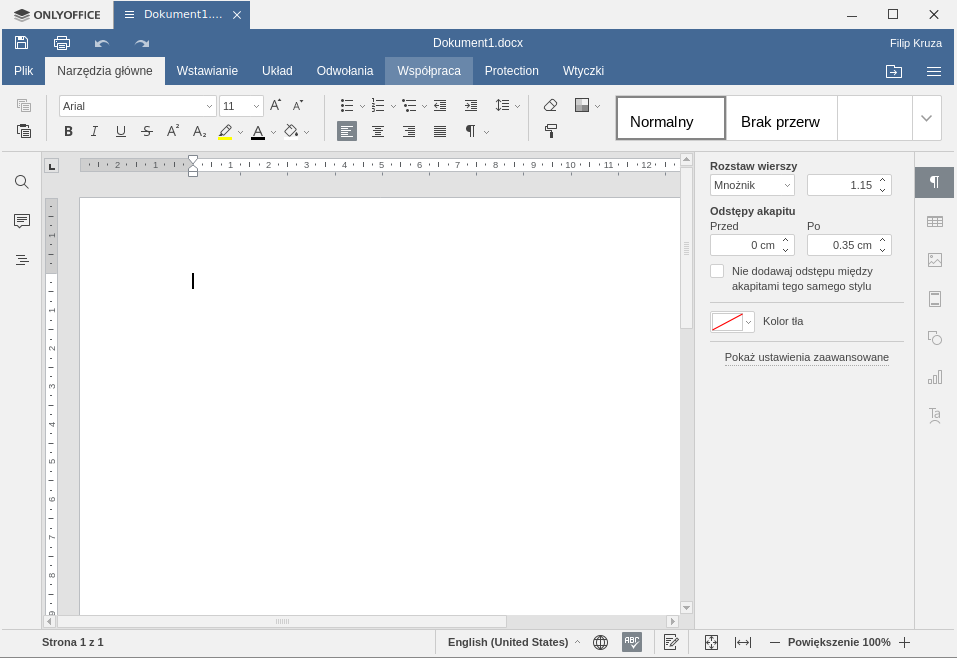
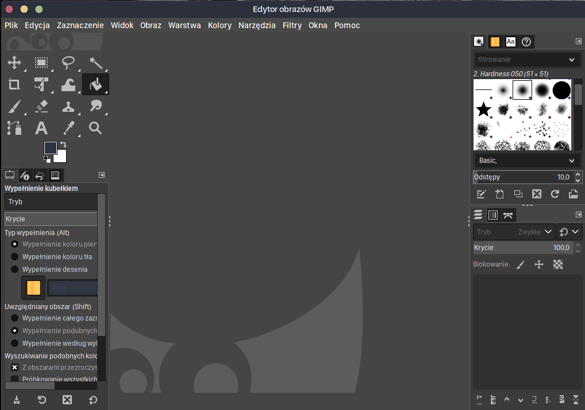
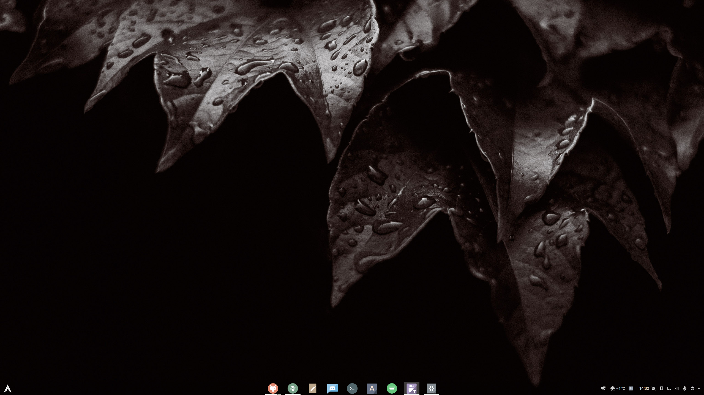
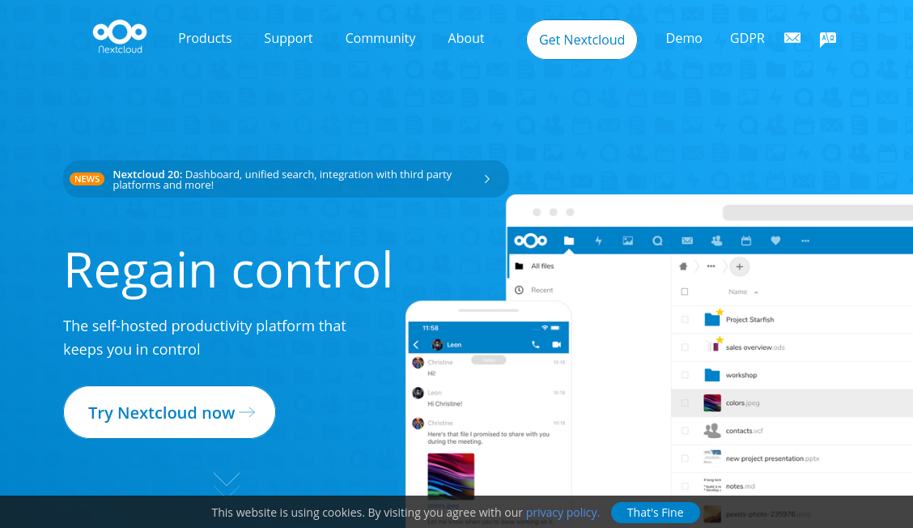
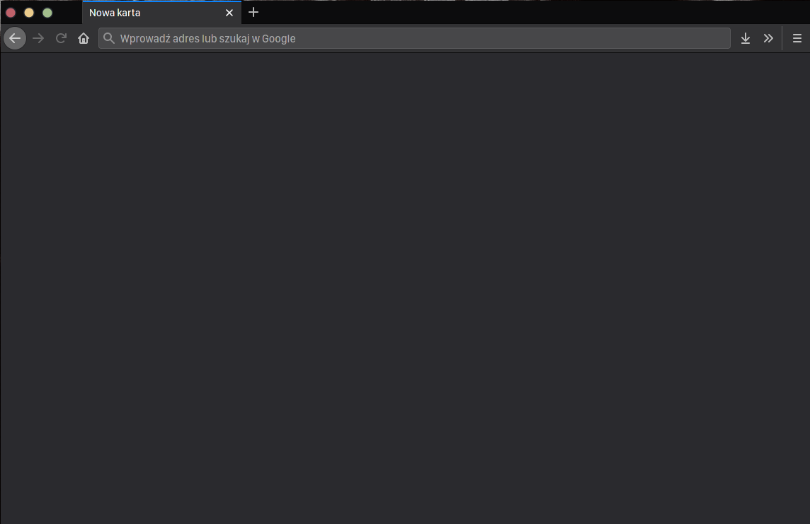
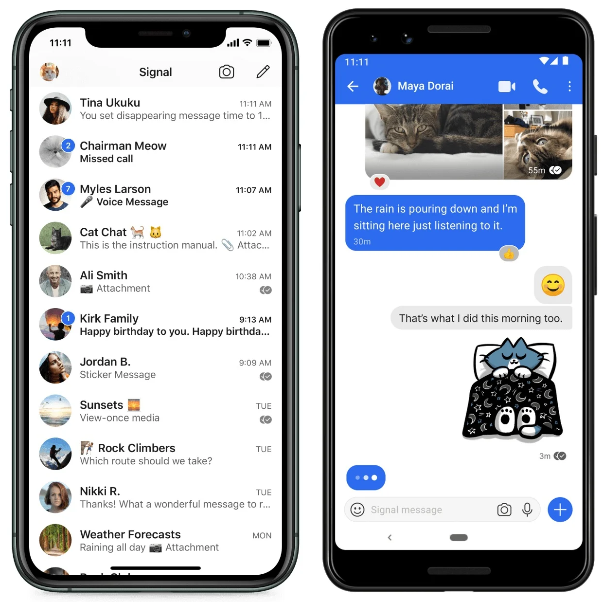
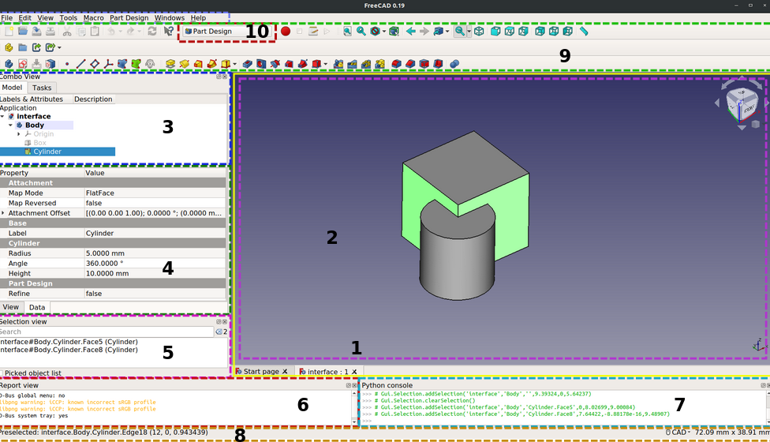
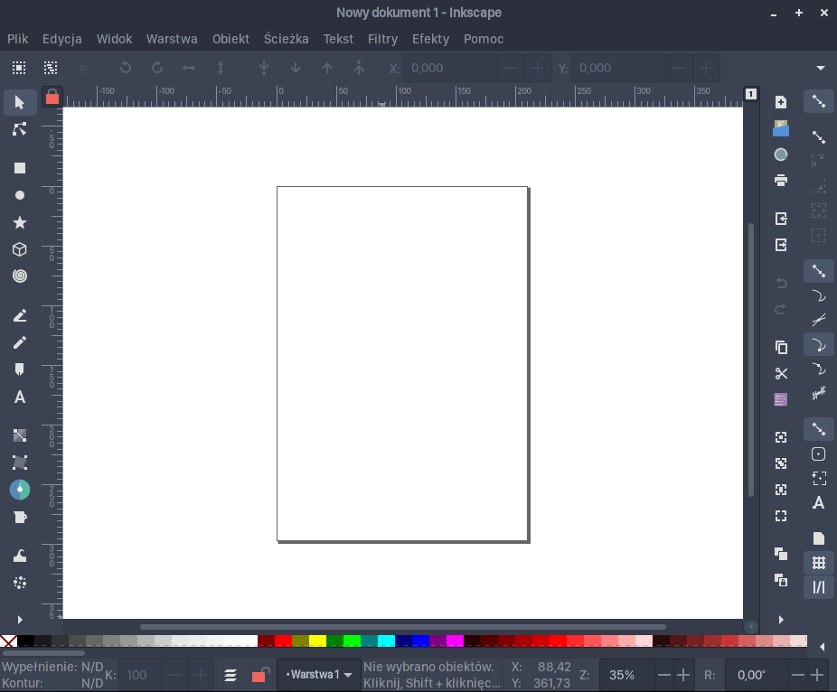
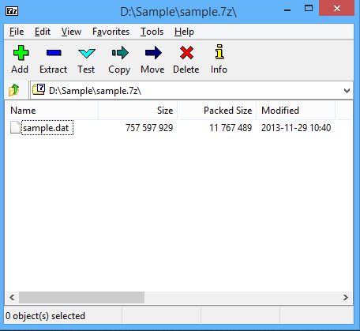
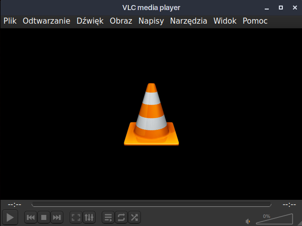

Otwartoźródłowe zastępstwa dla popularnych usług
Programy z otwartym źródłem mają sporo zalet. Są zazwyczaj darmowe i bez reklam, nie wysyłają danych użytkownika i mają szybko łatane błędy.
Pakiet biurowy
OnlyOffice
Edytor zdjęć
GIMP zamiast Photoshopa
System operacyjny
Linux zamiast Windowsa
Chmura
Nextcloud zamiast Google Drive/OneDrive
Przeglądarka
Firefox zamiast Chrome
Komunikator
Signal zamiast Messengera
CAD
BRL CAD (lub FreeCAD) zamiast AutoCad
Inkscape
Inkscape zamiast CorelDraw
Archiwa
7Zip zamiast WinRar
Odtwarzacz wideo
VLC
Filip Kruza, 2021